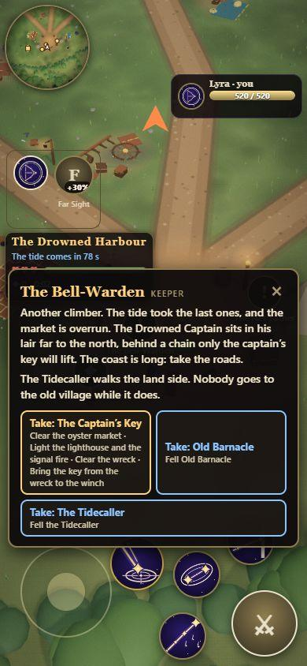
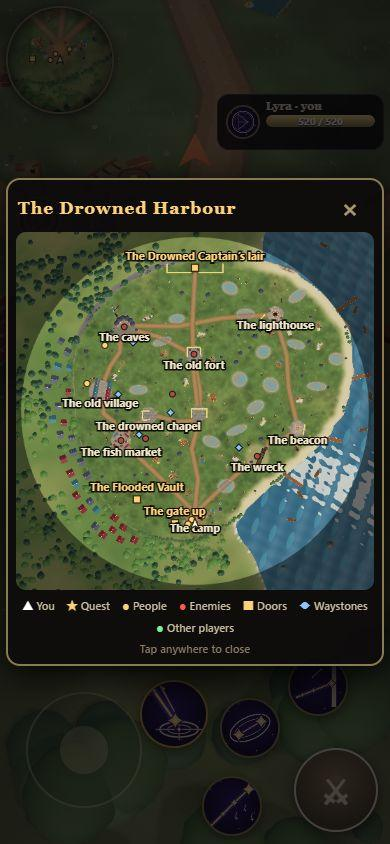
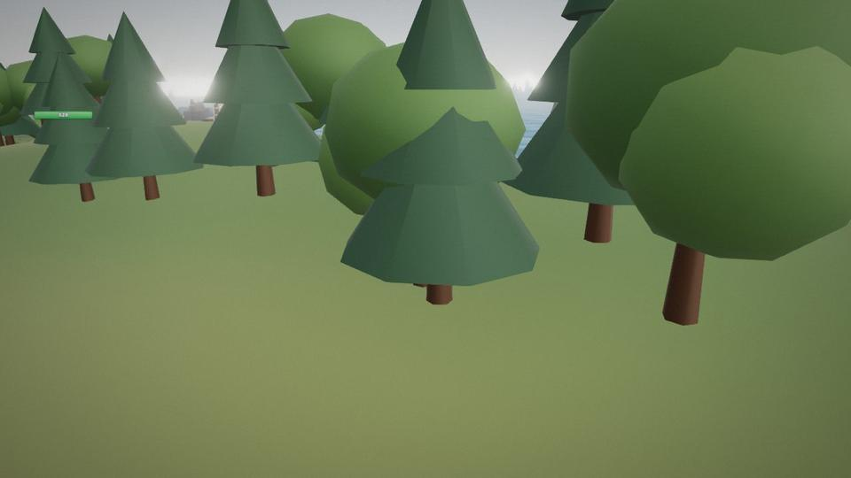
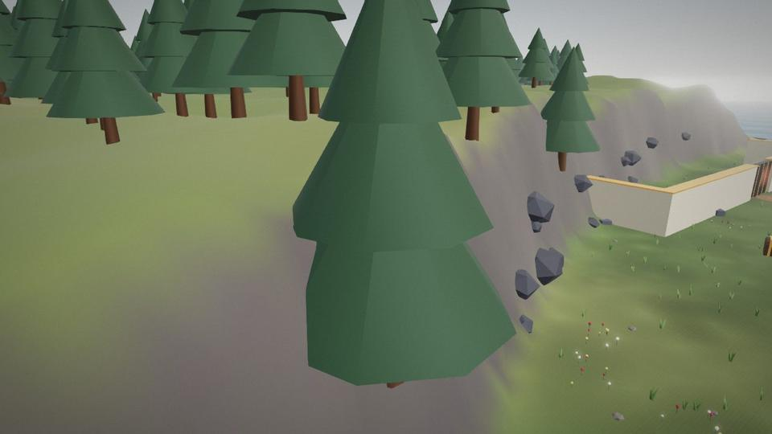
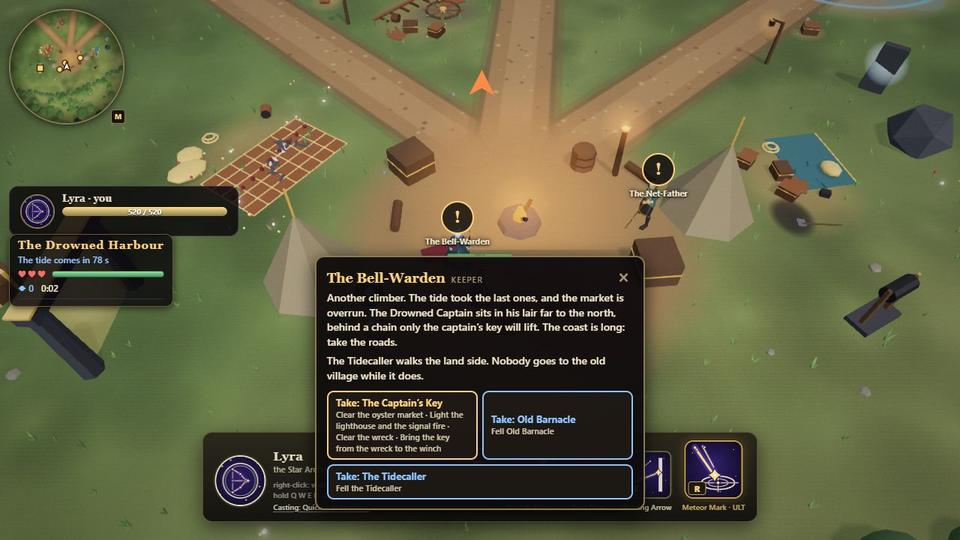

The Climb, floor by floor: 01 to 30
Each floor played in the real game (headless browser, time stepped by hand): the route bot from camp to gate, every person, pack, door and the ruler, the map, the phone view, the props probe, the texts against the lore. Faults that were clearly slips were fixed (blue); bigger ones or matters of taste are listed for you (red).
For you to decide
- Floor 1: The ruler's name: Captain or Admiral?. The floor calls its ruler “the Drowned Captain” (keeper's line, the lair, the quest, the boss card); the Codex (climb/rulers.md, climb/sea.md) says the Drowned Admiral rules floors 1 and 2, and floor 2 calls him the Drowned Admiral. Its model is the Admiral's. Renaming floor 1's to “the Drowned Admiral” is five strings in gen/harbour.ts and a re-bake; say if you want it.
- Floor 1: The Codex's tide: 78 s, the game's: 80 s. The Codex page The Sea says the tide comes every seventy-eight seconds; the floor's law says (and does) every 80 s for 15. A one-word fix in docs/lore/codex/climb/sea.md and the game's copy (lore-codex.py); left because the Codex is the lore writer's.
- Floor 1: On the map, “The gate up” sits on “The camp”. The gate is beside the camp on every floor, so their two labels overlap on the M map (more on a phone). Small; a fix would nudge one label in map.ts.
Fixed
- Floor 1: The market had two names. The map, the keeper and the place said “the fish market”, but the main quest's step said “Clear the oyster market” and its waystone was “The oyster market stone”; the step “Light the lighthouse and the signal fire” named a place the map calls “The beacon”. Cause: the floor's maker (src/tower/world/gen/harbour.ts) renamed the places but not the words that name them. Now the steps and the stone follow the new names (only these three strings changed in the baked floor).
Floors
I. The Sea
Floor 1: The Drowned Harbour
Plays from the camp to the gate with no error and no stuck spot; every person, pack, door and the ruler work, the ruler in its own model. One slip in the words fixed (the market had two names); two lore names left for you.
fixedThe market had two names. The map, the keeper and the place said “the fish market”, but the main quest's step said “Clear the oyster market” and its waystone was “The oyster market stone”; the step “Light the lighthouse and the signal fire” named a place the map calls “The beacon”. Cause: the floor's maker (src/tower/world/gen/harbour.ts) renamed the places but not the words that name them. Now the steps and the stone follow the new names (only these three strings changed in the baked floor).



listThe ruler's name: Captain or Admiral?. The floor calls its ruler “the Drowned Captain” (keeper's line, the lair, the quest, the boss card); the Codex (climb/rulers.md, climb/sea.md) says the Drowned Admiral rules floors 1 and 2, and floor 2 calls him the Drowned Admiral. Its model is the Admiral's. Renaming floor 1's to “the Drowned Admiral” is five strings in gen/harbour.ts and a re-bake; say if you want it.

listThe Codex's tide: 78 s, the game's: 80 s. The Codex page The Sea says the tide comes every seventy-eight seconds; the floor's law says (and does) every 80 s for 15. A one-word fix in docs/lore/codex/climb/sea.md and the game's copy (lore-codex.py); left because the Codex is the lore writer's.
listOn the map, “The gate up” sits on “The camp”. The gate is beside the camp on every floor, so their two labels overlap on the M map (more on a phone). Small; a fix would nudge one label in map.ts.


okThe props the probe flagged. 14 “float” are pines on the hills past the edge (the probe measures them against the play ground, not the hill under them) and boats on the sea; 56 “gap” are pines on the cliff top whose root side hangs over the cliff. Each looked at from low: they stand on their ground.




What was measured
- Reachable from the camp: 34968 m²; 51 spots of the floor's data, 0 cut off
- Props probe: 14 float, 56 gap, 0 buried, 0 in cover (each looked at; see below)
- Grass and small things on ground steeper than 31°: 0
- Packs table for the open world (server/climb-packs.mjs): matches
- Route bot (Lyra): cleared in 1604 game s, every checkpoint reached; 23 kills, 2 falls, stars 1101; ruler tries 1, gate tries 3; page errors 0
- Ruler: The Drowned Captain (Anchor, cannon and tide), model models/tower/sea_admiral_v4.glb, loaded yes after 2419 ms of real time
- Frame check at the busiest spot (-71, -67), 5 units awake: median 11.4, 10.8, 10.4 ms, p95 18, 17.6, 14.7 ms (desktop, machine shared: rough)
- Console errors while taking the pictures: 0
Not checked: the shared packs online (alone a cleared pack does not come back: as designed, pipeline/designs/climb-open-world.md); buying at the trader (the card and prices shown; the bot's heals use it)


